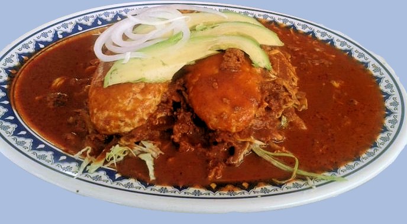

Se te dificulta salir a comer por falta de tiempo o porque en la zona en donde trabajas no hay donde comprar alimentos preparados.
No sufras más, no te quedes sin comer, deja de sufrir con esos alimentos que al probarlos te dejan un mal sabor de boca.
Somos la solución a tus problemas. Contáctanos, prueba los exquisitos sabores que tenemos para ti y haz que tu paladar salte de emoción.
Chancla
La chancla es un panecillo preparado con masa de harina de trigo fermentada con pulque, cuya forma se asemeja a una chancla o lengüeta. Posee una consistencia y una textura similar a la del pan árabe, con la diferencia que las chanclas son infladas al centro, lo cual permite abrirlas y rellenaras.
Existen dos tamaños, algunas miden 9 centímetros de largo por 6.5 de ancho, mientras que las más grandes miden aproximadamente 17 centímetros de largo por 9 de ancho. Son similares las tortas ahogadas de Jalisco, ya que se rellenan con carne o algún otro ingrediente y se bañan con salsa.
Es un plato típico de Puebla y Tlaxcala, en México, que consiste en un pan bañado en una salsa de chile, con carne molida de res, lechuga, cebolla y aguacate.
Elaboración
Primeramente se fríe chorizo y se agrega carne molida de res unos minutos después.
Ambos ingredientes deben cocerse bien mientras que en una licuadora se muele jitomate, chiles de árbol, ajo, comino, sal y pimienta.

Después, en una olla se calienta la salsa para que espese. Por último, se corta el pan a la mitad y se rellena con la carne, aguacate, lechuga y cebolla fileteada o en aro, antes de hundirla en el adobo.
Para servirla, se coloca en un plato hondo para bañarla con un poco más de adobo y, se puede agregar queso y crema.
Aunque se trata de un antojito, los ingredientes que conforman la chancla contienen vitamina C, D, A y E.